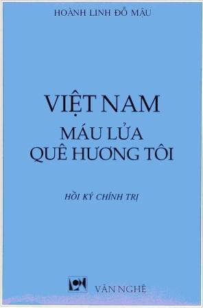
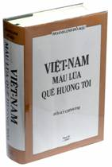
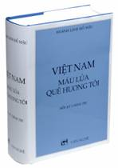
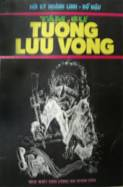
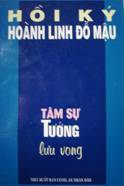
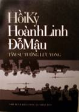

LỜI GIỚI THIỆU ẤN BẢN ĐIỆN TỬ - NĂM 2007
Đầu Xuân năm 2007, được biết Nhà Xuất bản Văn Nghệ đã tiêu thụ hết đợt phát hành cuối cùng của Hồi ký Việt Nam Máu Lữa Quê Hương Tôi, và không có ý định tái bản tác phẩm nầy nữa trong một tương lai gần, chúng tôi, một nhóm thân hữu của tác giả Hoành Linh Đỗ Mậu, đã liên lạc với gia đình của tác giả để xin tái bản tác phẩm nầy dưới dạng điện tử. Và đã được gia đình tác giả chấp thuận với một số yêu cầu về tác quyền và biên tập.
Về nội dung, không có một thay đổi nào trong Ấn bản Điện tử (so với ấn bản giấy 1993) ngoại trừ thêm một số hình ảnh của tác giả; và ở Phụ Lục E, 10 Bài Đọc Thêm, chúng tôi thêm một lá thư của tướng Dương Văn Minh và một bài viết về Tướng Trình Minh Thế để làm sáng tỏ một số bí ẩn lịch sử được nhắc đến trong Hồi ký.
Về hình thức, có ba thay đổi trong quá trình cập nhật lại tác phẩm nầy:
Sửa lại các lổi chính tả và đánh máy. Với tổng số lượng gần 750,000 từ của toàn bộ tác phẩm, đây là một nỗ lực liên tục nhưng chắc vẫn còn khiếm khuyết ngay cả trong ấn bản điện tử nầy.
Sửa và thêm các đại danh từ (cụ, ông, bác, anh,...) và những chức vụ (phó tổng thống, thiếu tá, giáo sư, nhà văn,...) trước tên riêng của các nhân vật. Tùy ngữ cảnh và bối cảnh của mỗi tình huống, chúng tôi chọn đại danh từ/chức vụ nào mà chúng tôi nghĩ rằng phù hợp nhất. Mặt khác, có một số nhỏ đại danh từ và chức vụ không cần thiết, thì chúng tôi cũng đã quyết định bỏ đi.
Ba từ “Công giáo”, “Kitô giáo” và “Thiên Chúa giáo” đã là một vấn nạn khó tạo được sự đồng thuận trong cách sử dụng. Do đó, ngoại trừ vài trường hợp đặc biệt, trên nền không-thời-gian lịch sử mà Hồi ký chủ yếu được xây dựng (là chế độ Ngô Đình Diệm), chúng tôi quyết định thống nhất hầu hết các từ nầy thành từ “Công giáo” như chính những giáo hữu Việt Nam, trong giai đọan đó cũng như kể cả bây giờ, đã gọi Công giáo La Mã (Roman Catholic).
Có hai lý do khiến chúng tôi lấy quyết định tái bản tác phẩm Việt Nam Máu Lữa Quê Hương Tôi nầy của tác giả Hoành Linh Đỗ Mậu dưới dạng điện tử:
Và thứ nhì là với những thành quả ngoạn mục của cuộc cách mạng Tin học, tri thức không còn bị phong tỏa, lại càng không trở thành sản phẩm độc quyền của một giai tầng nào nữa. Do đó, sản phẩm trí tuệ cần được xuất hiện dưới dạng điện tử để dễ dàng vượt mọi biên giới thiên nhiên, rào cản hành chánh và giới hạn tiền bạc, ngõ hầu có thể bay vào không gian cyberspace mà đến với người đọc khắp địa cầu.
Nhóm Thân hữu của tác giả Hoành Linh Đỗ Mậu, khi hoàn thành ấn bản nầy, chỉ nhắm đáp ứng hai nhu cầu nói trên. Và đóng góp phần mình vào việc thực hiện tâm nguyện của tác giả đã được trang trải đầy ắp trong tác phẩm nầy.
Hoa Kỳ - Thu 2007
Nhóm Thân hữu trách nhiệm Ấn bản Điện tử VNMLQHT-2007
° ° °
LỜI GIỚI THIỆU ẤN BẢN THỨ BA - NĂM 1993
Tập Hồi ký chính trị Việt Nam Máu Lửa Quê Hương Tôi của tác giả Hoành Linh Đỗ Mậu được Nhà Xuất bản Hương Quê ấn hành lần đầu tiên vào mùa thu năm 1986 tại miền Nam California, Hoa Kỳ.
Từ đó đến nay, tác phẩm này đã được tái bản một lần (1987) và in lại tám lần. Như vậy, bản mà quý bạn đọc cầm trên tay hôm nay (1993) của Nhà Xuất bản Văn Nghệ là lần biên tập thứ ba và là lần in lại thứ chín (Third Edition, Ninth Printing).


Ấn bản 1993
Đó là không kể hai ấn bản mà tác giả hoàn toàn không biết đến quá trình hình thành của chúng. Bản thứ nhất in tại Úc Châu vào khoảng năm 1990 với một hình bìa khác hẳn. Và bản thứ nhì in tại Việt Nam, không những khác bìa, nội dung bị biến cải, mà ngay cả tên sách cũng bị thay đổi. Đó là cuốn Tâm Sự Tướng Lưu Vong do Nhà Xuất Bản Công An Nhân Dân ấn hành 3.200 ấn bản vào năm 1991 (Số xuất bản 117/KII90 CAND). Sau khi đối chiếu với nguyên bản, tác giả cho chúng tôi biết rằng ấn bản này đã bị bỏ bớt gần một phần tư nội dung, thay đổi một số danh xưng và bớt nhiều đoạn; nhưng nói chung, phần Sử luận và các luận điểm chính trị của ông, về căn bản, vẫn được giữ lại gần nguyên vẹn.



Ấn bản 2001
Lẽ dĩ nhiên, tác giả đã không biết gì hết về sự ra đời của ấn bản này, lại càng không liên lạc được vì hoàn cảnh lịch sử và chính trị oái oăm của đất nước, để phản đối việc làm vừa vi phạm tác quyền vừa vi phạm sự trung thực toàn vẹn của một sản phẩm trí tuệ.
Bảy năm đã trôi qua kể từ khi ấn bản đầu tiên ra đời.
Đã có rất nhiều, quá nhiều là khác, thảo luận và bút chiến về tác phẩm, và nhiều khi, về từng chủ điểm mà tác phẩm này nêu lên. Cho đến thời điểm này, vẫn còn xuất hiện trên báo chí hải ngoại những bài viết đề cập đến tác phẩm hoặc tác giả. Đặc biệt đã có 13 cuốn sách của những người viết đứng từ những vị trí khác nhau, nhìn từ những góc độ khác nhau, và mang những tâm chất khác nhau, nhưng tất cả đều trực tiếp hay gián tiếp liên hệ đến tác phẩm hay tác giả.
Trong lúc có hai người viết nêu đích danh tác giả trên bìa sách để “trực thoại” (Linh mục Vũ Đình Hoạt và Cựu Nghị sĩ Nguyễn Văn Chức) thì cũng có những cuốn đào sâu các luận đề mà tác giả viết chưa đủ rốt ráo (Hồ Chí Minh, Ngô Đình Diệm và Mặt Trận Giải Phóng Miền Nam của ông Hồ Sĩ Khuê và Gia Tô Thực Dân Sử Liệu của ông Chu Văn Trình). Trong lúc có người viết lúc chống lúc thuận với tác giả (ông Nguyễn Trân) thì cũng có người cung cấp thêm những dữ kiện và luận cứ mới làm mạnh thêm những luận điểm của tác phẩm (ông Nguyễn Long Thành Nam, Tướng Nguyễn Chánh Thi, Tướng Trần Văn Đôn, Đại tá Trần Văn Kha, ông Lê Trọng Văn). Lại có thêm ấn bản Việt ngữ (Sự Lừa Dối Hào Nhoáng) của tác phẩm The Bright Shining Light của Neil Sheehan (1991) và ấn bản Pháp ngữ Les Missionnaires et La Politique Coloniale Francaise au Vietnam của ông Cao Huy Thuần lần đầu tiên được Đại học Yale xuất bản tại Hoa Kỳ (1990)… Tất cả chỉ làm cho tác phẩm Việt Nam Máu Lửa Quê Hương Tôi trở thành một hiện tượng độc đáo trong lịch sử các tác phẩm nghiên cứu của Việt Nam. Và hơn thế nữa, chỉ làm cho chúng ta thấy rằng tác phẩm đã đề cập đúng những vấn đề căn bản, có thực, và có tác động sâu sắc đến nhiều người Việt Nam, đến chính tình Việt Nam không những chỉ trong quá khứ mà còn cả trong tương lai nữa.
Trong lần tái bản này, phương pháp luận căn bản của tập Hồi ký là thông qua các biến cố lịch sử (mà tác giả đã sống và/hoặc nghiên cứu) để giải thích những lực nào đã tác động lên sự vận hành của lịch sử nước ta trong hơn nửa thế kỷ vừa qua, vẫn không thay đổi. Nói rõ hơn, bản chất cuộc chiến và các lực lượng tham chiến trên quê hương ta suốt mấy chục năm trời vẫn có tính phi dân tộc. Và nguyên lý chỉ đạo làm nền tảng sử luận cho tác giả là đã phi dân tộc thì thế nào cũng phản dân tộc vẫn chảy xuyên suốt tác phẩm.
Tuy nhiên, trong lần tái bản thứ ba này có một số thay đổi sau đây:
Về hình thức, số lỗi chính tả và ấn loát (nhất là các dấu hỏi ngã) được giảm thiểu tối đa. Một số rất ít tên người, tên địa phương và ngày tháng cũng đã được cập nhật lại. Đặc biệt, so với lần trước, ấn bản này tuy có dài thêm khoảng 15 phần trăm (nâng tổng số lên hơn 750 ngàn chữ) nhưng số trang, theo lời yêu cầu của tác giả, lại được rút ngắn còn 80 phần trăm (1089 trang) nhờ cách dòng (interline spacing) nhỏ hơn và cỡ chữ (text size) nhỏ lại, hầu tiết giảm giá thành đến mức thấp nhất.
Việc sử dụng hai nhu liệu tin học VNI và Ventura để trình bày sách đã giúp cho ấn bản này đồng dạng hơn, sáng sủa hơn, do đó dễ đọc hơn các ấn bản trước.
Về nội dung, một số luận cứ và chứng liệu lịch sử mới đã được thêm vào, đặc biệt về quá trình du nhập Công giáo vào Việt Nam, về những bí ẩn mới trong cuộc Cách mạng 1-11-63, về cuộc vận động cho Dân chủ của Phật giáo tại miền Trung năm 1966, về vai trò của Vatican trong những ngày cuối cùng của miền Nam vào năm 1975... để nhân đó, tác giả trả lời một số xuyên tạc và ngộ nhận về tác phẩm. Cũng thêm vào trong ấn bản này là một Phụ Lục mới gồm 10 tài liệu đọc thêm của những nhân chứng lịch sử và một số hình ảnh của các khuôn mặt quan trọng đã hiện diện trong tác phẩm.
Nhân dịp này, tác giả có nhờ chúng tôi chuyển lời cảm ơn đặc biệt đến cụ Lãng Nhân Phùng Tất Đắc, cụ Hương Thuỷ Hoàng Trọng Thược, cụ Phùng Duy Miễn, nhà Sử học Vũ Ngự Chiêu, Trung tướng Vĩnh Lộc, bác sĩ Võ Tư Nhượng và Giáo sư Phạm Phú Xuân đã tận tình góp ý sửa lời để ấn bản này được toàn vẹn hơn.
Nhà Xuất Bản Văn Nghệ, khi quyết định xuất bản và phát hành tác phẩm này, chỉ muốn xác nhận lại chủ trương của mình: cung cấp cho độc giả trong và ngoài nước những tác phẩm giá trị, những công tình trí tuệ có phẩm chất cao hầu đóng góp vào gia tài Văn hoá của dân tộc.
Ngoài ra, riêng với tác phẩm Việt Nam Máu Lửa Quê Hương Tôi, sự kiện có những tranh luận sôi nổi xung quanh tác phẩm, và trước nhu cầu tìm đọc nguyên bản của nhiều độc giả đã từng đọc “ấn bản trong nước”, chúng tôi tự thấy có bổn phận phải nỗ lực hoàn thành việc xuất bản và phát hành tác phẩm này, với ước mong cống hiến cho những đồng bào còn quan tâm đến vận mệnh quê hương một cách nhìn mới về những vấn nạn mà tổ quốc ta đã đối trị và có thể sẽ còn phải đối diện trong tương lai.
Hoa Kỳ, tháng 9 năm 1993
Nhà Xuất Bản VĂN NGHỆ